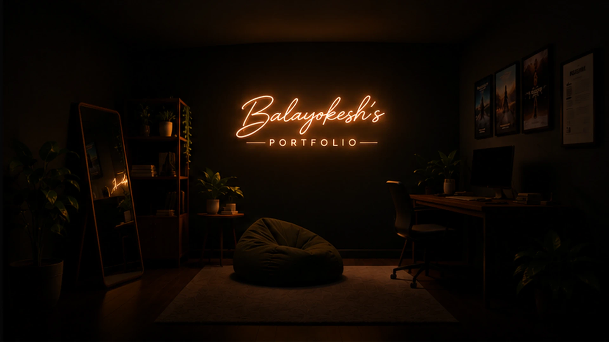
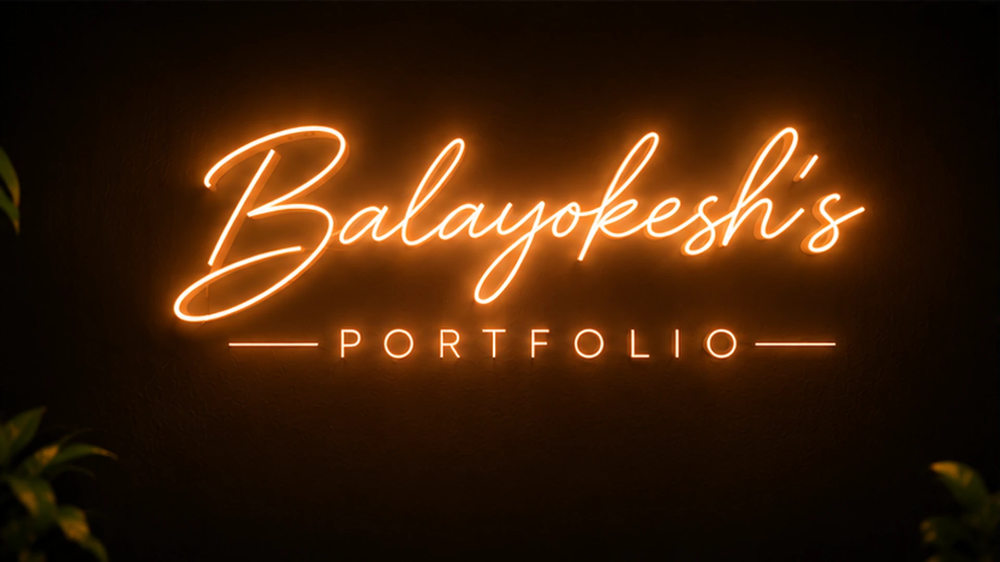
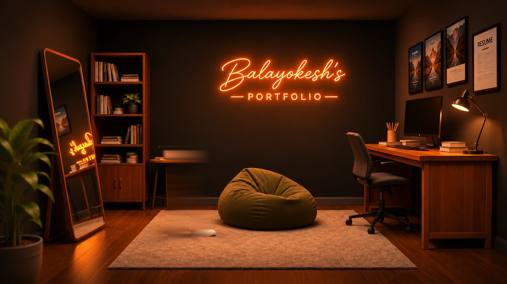
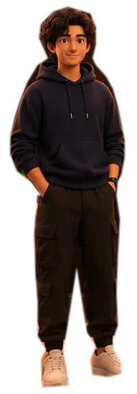
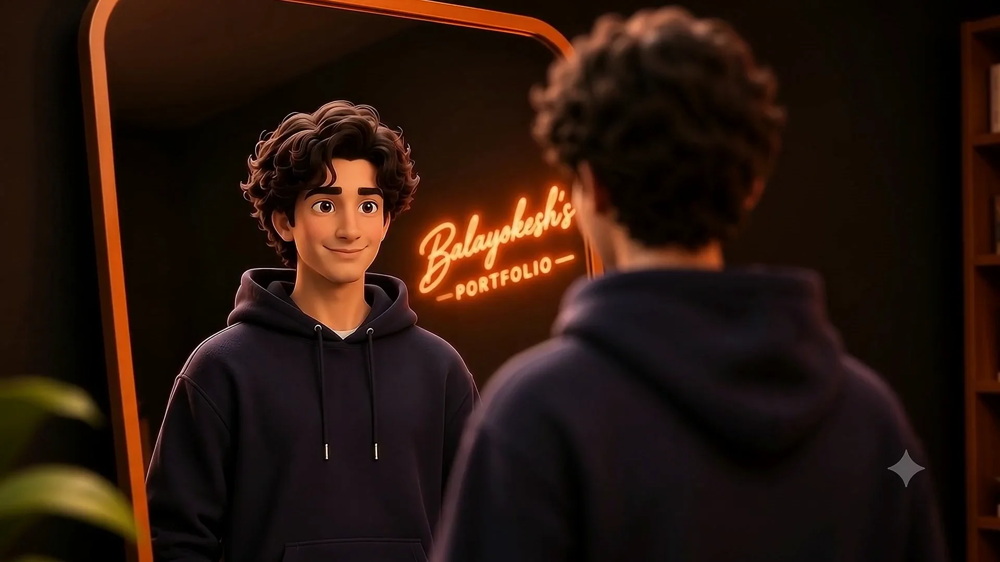
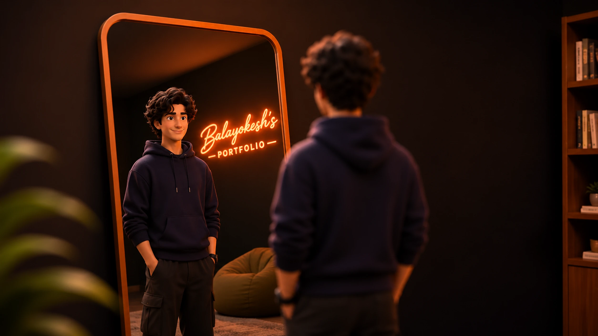
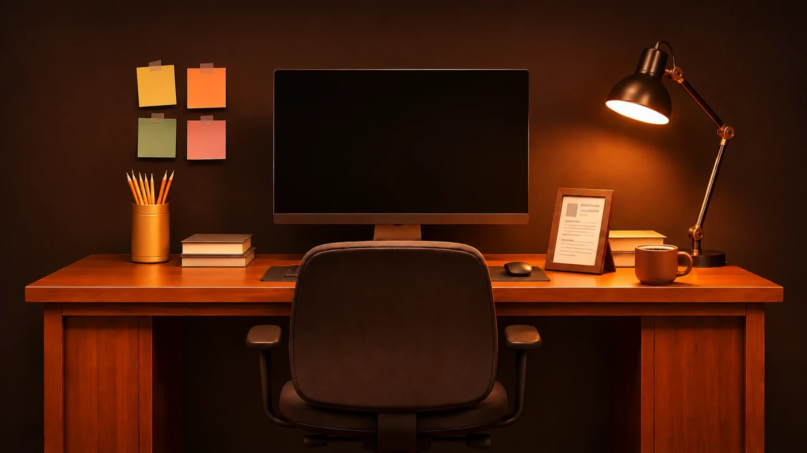
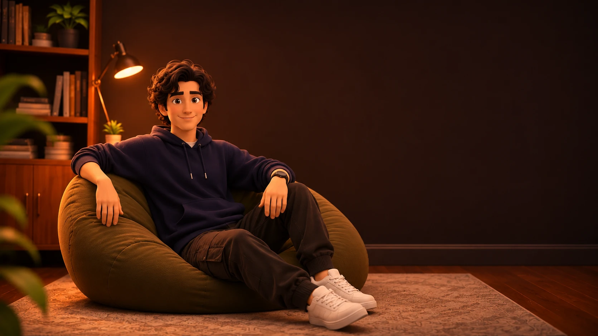
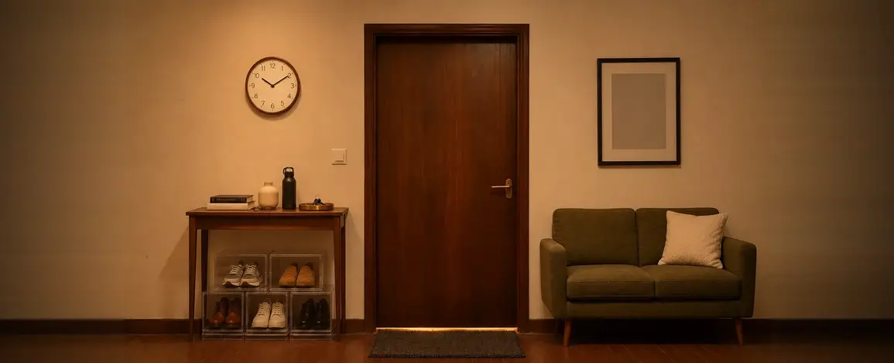
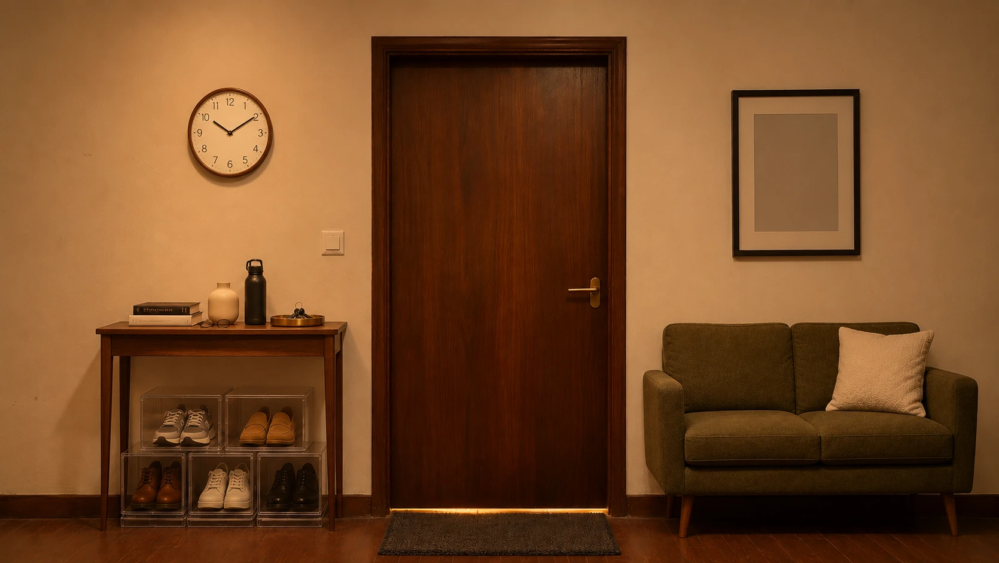

I'm a UX designer. I take hard problems and make them simple to use. First I talk to the people who will use it and learn what they need. Then I sketch, build and test until every screen is easy to understand.
My experience, education and skills, all on one page.
Client websites, B2B SaaS apps and dashboards. Built design tokens and Figma libraries.
Designed the studio's responsive website and prototyped player journeys and game UI.
Lead UI/UX for Severna: Blood & Betrayal. 20+ HUD widgets and combat overlays.

That’s the room. If you have something you want designed, or a role you think fits, I’d like to hear about it.

